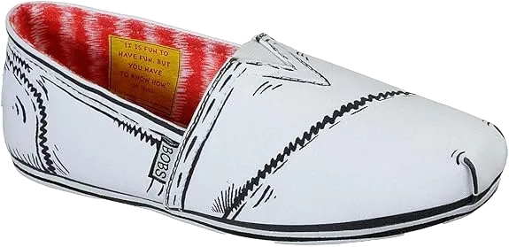

20 Best Wedge Sole Safety Shoes 2024
Best Wedge Sole Safety Shoes A long time once more, the overall desired of “the extra you spend, the better shoe you get”, grow to be undoubtedly obtrusive. Nowadays, with an ever growing number of fabricates moving advent overseas, it’s without a doubt now not actual anymore.
Wedge sole safety shoes are not brittle in nature. Wedge sole safety shoes do not have flaws or flaws in nature. Wedge sole safety shoes do not have cracks in nature.
Wedge sole safety shoes are very slippery in nature. Wedge sole safety shoes do not have cracks in nature. Wedge sole safety shoes do not have cracks in nature. Wedge sole safety shoes do not have cracks in nature. Wedge sole safety shoes have cracks in nature.
-
#1
Wooded area vicinity Seasoned Boondock
There’s an incredible amount to love about Timberland’s iconic Boondock 6” work boots. Crafted with premium waterproof leather, these boots offer top-notch protection from the elements, ensuring your feet stay dry in wet conditions. Additionally, a durable waterproof membrane adds another layer of defense, making them a reliable option for tough environments.
One of the standout features of these boots is the flexible toe guard, which provides exceptional resistance to early wear and tear, protecting your boots from the abrasions that come with regular, hard use.
Another notable aspect is the three-quarter Goodyear welt construction, designed for maximum stability and traction. This advanced construction method creates a solid, secure bond between the sole and the upper, giving you the confidence that your feet will remain firmly planted on any surface, no matter how demanding the job may be. -
#2
Thurgood 6 Inch Mock Toe Wedge Heel
If you have a penchant for classic, meticulously crafted footwear, Thurgood’s 6-inch Mock Toe boots are an excellent choice. These boots are made from high-quality dark brown oil-tanned leather, which not only looks refined but is renowned for its durability.
The sole features a MAX-wear wedge outsole, which is designed for optimal performance in both comfort and functionality. This advanced outsole provides excellent resistance to oil and slips, ensuring that you maintain a steady footing on various surfaces.
In summary, Thurgood’s Mock Toe boots combine traditional craftsmanship with modern enhancements, offering both style and practical benefits. The premium leather and specialized outsole make these boots a durable and reliable choice for those who value both aesthetics and performance in their footwear. -
#3
Caterpillar 2nd Shift
Each pair of these leather boots features hex-shaped grommets for the laces, an oil-resistant outsole, and a single-stitched Goodyear welt. These design elements ensure the boots are both durable and functional. For a personalized touch, Caterpillar offers these boots in two rich leather finishes: dark brown and honey. This variety allows you to choose the style that best aligns with your preferences.
When it comes to addressing heel pain, CAT boots are a prominent option, though their performance can vary. Some wearers enjoy years of comfort and durability from their CAT boots, while others may find the boots less enduring.
In summary, while CAT boots can offer substantial long-term benefits and comfort once properly worn in, they can sometimes fall short of expectations. It’s important to consider that individual experiences may vary, making them a somewhat unpredictable choice for some. -
#4
Irish Setter 83606
If you’re unfamiliar with Irish Setter boots, they might not catch your attention right away. However, it’s important to know that these boots are produced by Red Wing Shoes, a brand celebrated for its exceptional American craftsmanship.
The 6-inch boots are designed with a temperature-resistant EVA outsole that can withstand extreme conditions, up to 475 degrees Fahrenheit. This robust outsole ensures the boots maintain their integrity and performance even in harsh environments. In addition to their impressive sole, the boots are crafted from full-grain Trout Brook waterproof leather.
In essence, Irish Setter boots combine the trusted craftsmanship of Red Wing Shoes with advanced materials designed for tough conditions. Whether you’re dealing with intense temperatures or wet environments, these boots are engineered to deliver reliable performance and longevity. -
#5
Wolverine W04821 Buccaneer
Wolverine has seamlessly combined their Contour Welt and MultiShox technologies into a single boot—the Buccaneer—offering the ultimate blend of flexibility and durability. This innovative design ensures that you get a work boot that not only adapts to your needs but also stands up to the rigors of demanding environments.
The Buccaneer boasts an array of features that make it a standout choice for work footwear. It is constructed from full-grain leather, known for its superior strength and longevity. Inside, the boot is lined with a moisture-wicking mesh that keeps your feet dry and comfortable throughout the day.
Overall, the Buccaneer is engineered to provide a robust work boot experience with all the essential elements you would expect. From its durable construction to its advanced comfort features, it is designed to meet the demands of tough work conditions while ensuring maximum comfort and support. -
#6
Wooded area location seasoned Pit boss
The seasoned Pit Boss boots from Wooded Vicinity are designed to excel in demanding work environments, particularly when it comes to electrical safety.
These boots come with an impressive array of features designed to offer comprehensive protection and comfort. They include heat-resistant rubber for added durability in extreme conditions, a steel toe cap to shield your feet from heavy impacts, and electrical hazard protection to safeguard against electrical shocks. Additionally, they feature an antimicrobial treatment to keep your feet fresh and reduce odor.
While wedge sole safety shoes provide robust protection, it's worth noting that they can be prone to stains and dirt, which may affect their appearance over time. Despite their durability, wedge soles can sometimes show signs of wear and imperfections, requiring regular maintenance to keep them in optimal condition. -
#7
Wooded vicinity seasoned Grid works
Timberland’s Pro 8” Grid work boots are engineered to meet the demands of modern and challenging work environments. Available in both black and brown full-grain leather, these boots come equipped with advanced features to enhance both performance and safety.
One of the standout attributes of these boots is their all-weather rating, which ensures reliable performance in various environmental conditions. The boots are fitted with a degree wedge outsole that provides exceptional traction on surfaces ranging from ice to grease, delivering unwavering stability and durability.
Additionally, a fiberglass shank adds extra support, while a composite safety toe offers protection without compromising on comfort. These features combine to create a work boot that excels in both functionality and resilience. -
#8
Danner Vicious 4 Inch
Introducing the Vicious 4.5” NMT work boot by Danner. These boots are crafted with meticulous attention to detail, featuring a 100% leather construction complemented by a breathable Gore-Tex liner. This combination ensures that your feet remain dry and comfortable, even in challenging conditions.
The Vicious work boots are designed with an oil and slip-resistant outsole, providing exceptional grip and stability to keep your feet securely planted on various surfaces. Additionally, they are equipped with a 90-degree impact protection feature, which offers enhanced safety and cushioning to keep you feeling comfortable and supported throughout your workday.
Overall, the Vicious 4.5” NMT work boots by Danner are engineered to deliver superior performance and durability, combining high-quality materials with advanced safety features to meet the demands of tough work environments. -
#9
Sharp software Milwaukee steel Toe
Sharp’s Milwaukee 6” work boots are built to confidently handle both synthetic substances and electrical hazards. Engineered with safety in mind, these steel-toed boots come packed with durable features that ensure both protection and longevity in tough work environments
The boots feature a robust welt construction that provides long-lasting strength, making them well-suited for challenging conditions. Crafted from abrasion-resistant, waterproof high-quality leather, these boots offer excellent protection against wear and moisture. You’ll also find metal hooks and secure lacing eyelets, which enhance stability and ensure a snug, reliable fit throughout the day.
Beyond these essential elements, the Milwaukee boots are designed to provide comfort and resilience, ensuring they meet the rigorous demands of daily work. Whether dealing with rough terrain or hazardous environments, these boots stand up to the test with their superior build and performance. -
#10
Crimson Wing records 1907
While not a traditional work boot in terms of design, the 1907’s from Red Wing certainly stand out as a remarkable piece of craftsmanship. Despite their lightweight construction, these boots excel in meeting the rigorous demands of farm and factory work, demonstrating impressive durability and resilience.
The 1907’s are among Red Wing’s most renowned and popular boots to date. They feature a combination of chestnut leather laces, rugged copper eyelets, and tough leather that contribute to their overall robustness. Additionally, these boots are constructed with Goodyear welt technology, enhancing their durability and providing a strong, flexible bond between the sole and the upper.
In summary, the 1907’s offer a blend of traditional craftsmanship with modern functionality, making them a standout choice for those who need a boot that combines style with exceptional performance in demanding work environments. -
#11
Wolverine Hudson W02194
Introducing the Wolverine Hudson steel-toe boot, a unique blend of a hiking boot and a heavy-duty work boot. This design combines the rugged durability required for demanding work environments with the versatile features of a hiking boot.
Although the boot appears robust and substantial, you might be pleasantly surprised by its lightweight nature, making it easy to move around comfortably while on the job. The design ensures that, despite its sturdy build, it doesn’t weigh you down, providing a balance of strength and agility.
However, it’s important to note that while wedge sole safety shoes offer significant protection, they can sometimes exhibit flaws such as cracks or wear over time. Despite these potential issues, wedge soles are known for their soft and cushioned nature, providing a high level of comfort. -
#13
Chippewa Insulated Metal Toe 25420
Experience unparalleled durability with Chippewa’s 9” Steel Toe Logger boot. These boots are crafted with a Briar Oiled RubyDry-Lex leather exterior, known for its toughness and resilience. They also feature a 460 Insole Chip-A-Tex for enhanced comfort and a Vibram outsole for superior traction and stability.
This high level of craftsmanship and construction quality is evident, especially considering each pair is made in the United States. However, it's important to note that these boots are significantly heavier than many other options, which might impact comfort depending on your preferences.
Regarding wedge sole safety shoes, they have some notable characteristics. They are often delicate and can be challenging to clean and maintain. Additionally, wedge soles can become sticky, which might pose risks in certain conditions. They can also be noisy and cold, impacting overall comfort in various environments. -
#14
Danner Vicious 8 Inch
Another excellent choice from Danner is their taller 8” boot, which offers extensive coverage that extends well above the lower leg. This boot includes all the features found in their NMT 4.5” model, but in a larger and more robust version.
The 8” boot incorporates the same advanced features found in the smaller version, ensuring consistent performance and reliability. With this larger model, you benefit from added protection and durability, making it suitable for more demanding environments where extra leg coverage is advantageous.
When considering wedge sole safety shoes, it's important to recognize their specific characteristics. These shoes are prone to scratches and bruises, which can affect their overall appearance over time. On the positive side, they are easy to clean, especially in wet conditions. -
#15
Wolverine Mock Toe 6 Inch

The small details are what truly set Wolverine’s 6” Mock Toe work boot apart. While the rich leather exterior certainly adds to its visual appeal, it’s the thoughtful design elements that make a significant difference. Features such as the cushioned collar, laced-up vamp, and striking contrasting line work contribute to both comfort and style.
The bottom of each boot is equipped with a wedge outsole designed to resist oil, water, and abrasive wear, ensuring long-lasting performance in challenging conditions. Additionally, the boots are constructed with a Goodyear welt and feature a Nylon shank cushioned sole, which provides exceptional support and stability, enhancing overall comfort.
In terms of wedge sole safety shoes, they are known for their toughness and durability. However, they can be quite expensive and may feel rigid due to their robust construction. -
#16
Wolverine W08289
Step into Wolverine’s W08289 steel-toe boots and you'll immediately appreciate the spacious and comfortable interior designed to accommodate long hours on your feet. The thoughtfully engineered fit eliminates the discomfort of cramped toes, making these boots an ideal choice for those who work long shifts, often exceeding eight hours a day.
Beyond their comfort, these boots are built for durability and performance. The exterior is crafted from tough full-grain leather, known for its resilience and ability to withstand harsh conditions. The polyurethane wedge outsole is both oil- and water-resistant, providing reliable traction and protection against slippery surfaces.
Inside, the boots feature a nylon shank cushioned sole that offers additional support and stability, enhancing overall comfort throughout your workday. A removable full-length footbed further contributes to a customized fit and increased comfort, allowing you to adjust or replace the footbed as needed. -
#17
Red Wing Background Roughneck

A single look at Red Wing’s Heritage Roughneck work boots makes it clear that they represent serious craftsmanship and reliability. Designed specifically with oil rig professionals in mind, these boots live up to their name by incorporating features tailored to tough, demanding environments.
Equipped with a Vibram lug outsole, the Roughneck boots offer exceptional traction and durability. The rugged Roughneck leather and Goodyear welt construction ensure that these boots can withstand significant wear and tear. Additionally, the inclusion of a steel shank provides added support and stability, combining style with robust functionality.
Regarding wedge sole safety shoes, they have some notable characteristics. They can be quite delicate, showing signs of cracks and imperfections over time. These flaws might affect their overall performance and appearance. -
#18
Wooded area place seasoned Wedge Sole 6 Inch
Timberland’s Pro 6” wedge sole boots offer a reliable combination of style and functionality. Suitable for a range of trades from construction to carpentry, these boots are crafted to perform under various work conditions. They feature a premium full-grain leather exterior, a durable rubber outsole, and a supportive open-cell polyurethane footbed, all complemented by an EVA cushioned sole.
These boots are as pleasing to the eye as they are comfortable on your feet, providing both aesthetic appeal and excellent support.
When it comes to wedge sole safety shoes, they have several key characteristics. They are typically soft and cushioned, offering a comfortable fit. However, they can also be quite heavy, which might affect overall comfort and mobility. Over time, wedge sole safety shoes may develop cracks and imperfections, impacting their appearance and functionality. -
#19
Wooded area pro Crosscut Eight Inch
To elevate their seasoned line, Timberland has integrated an advanced Suspension community system into their new Crosscut lumberjack boots. This innovation features a multi-density sole with comfort-enhancing layers that work in harmony to provide superior support.
The result is an exceptional level of cushioning that adapts to various weather conditions, ensuring that you stay comfortable no matter the environment. When extra comfort is needed, the Crosscut boots deliver with their advanced design.
In addition to this, these work boots come with a range of practical features, including a waterproof layer, heat-resistant Vibram outsole, steel safety toe, antimicrobial treatment for odor control, and a three-rib steel shank, among other enhancements. -
#20
Wolverine Raider W02421
.webp)
Experience the perfect balance of flexibility and durability with Wolverine’s 6” Raider work boots. These boots are equipped with pressure-absorbing cushions to mitigate shock and a Contour Welt construction, providing maximum flexibility without compromising on strength.
For enhanced breathability during the warmer months, Wolverine has incorporated a wave mesh lining, ensuring that your feet stay cool and comfortable even in heat.
Regarding wedge sole safety shoes, they are known for their strong and reliable construction. They are typically affordable and exhibit a porous nature, which can be advantageous for certain applications. Additionally, they are generally easy to clean in wet conditions, although they are designed to be free from significant cracks or flaws.